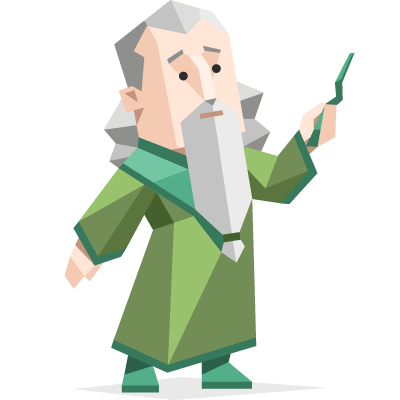
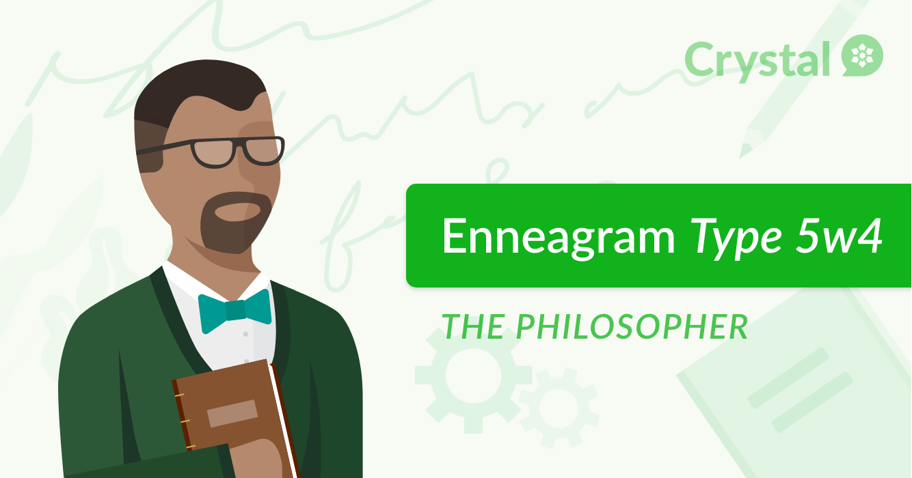

Teodore Bulloch
ePortfolio
Github Repo:github.com/TeodoreBulloch/
Student ID: S3901063
Student Email: S3901063@student.rmit.edu.au
|
Teodore BullochePortfolio |
Github Repo:github.com/TeodoreBulloch/ |
Student ID: S3901063 |
||
Student Email: S3901063@student.rmit.edu.au |
Personal Profile |
|---|
| Myers Briggs Type Indicator | The Ennegram Personality Test | Learning Style Test |
|---|---|---|
 |
 |
|
• What the results of these tests mean to me: These results are great tools that allow me to bring in further introspection onto myself, my personality, motivations and habits. Although the learning style test doesn’t really mean much on its own to me, I feel as if it complements the other two tests in terms of my behaviour. Although these tests aren’t 100% accurate, they roughly help establish where I am right now as a person and can give me some affirmation for being myself. But, best of all, these tests expose me to my fears and weaknesses, which gives me a greater idea on how I can improve myself to be a better person. Also one fun thing about these tests is that there is a whole community of people who like to type celebrities and fictional characters on this website so you can find similar types to yourself on this website: https://personality-database.com/ • How these results may influence my behaviour in a team: All 3 results didn’t reveal anything to me that was too unexpected, I’ve always felt like a reserved and self-reliant individual. My Myer Briggs type being an INFJ along with my method of learning both reveal that I like to be very independent and reserved, preferring to solve problems on my own. The test that revealed the most insight onto my current behaviours was the cognitive functions test. Being a 5w4 means that I value self-reliance the most, with my greatest fear being helpless or incompetent. Although these results reveal I’m at my best when working solo, I’m going to try and take the extra measure in working with my teammates by not being so stubbornly self-dependent. I also need to realise that sometimes it’s ok to rely on or ask for help from my teammates and teachers for help. • How these reuslts should be taken into account when forming a team: When forming a team, I’ve actually got to take the initiative to gather teammates that I’d like to work with. Although once I’ve settled in I do like co-ordinating the work everyone should be doing, I tend to be very reserved during the formation of a team process as I don’t know anyone yet. I realise that I’ve got to take the initiative to try and reach out to other people to ensure that I can create the best team that I’ve got. |
Footnote |
|---|